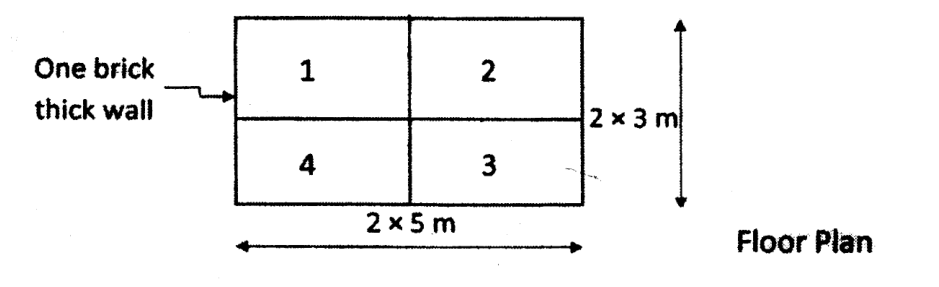

7.1 Design of One-Way & Two-Way Slabs 208220812080207920782076207520742073207220712069
PAST EXAM QUESTIONS: COMPLETE SLAB QUESTION LIST
- A rectangular slab panel has clear dimensions of 5.0 m × 4.0 m. It is continuous over three edges and discontinuous over one long edge, and it rests on beams 230 mm wide. The slab is subjected to an imposed load of 4 kN/m², a floor-finish load of 1.3 kN/m² and a probable partition-wall load of 1.5 kN/m². Include the self-weight of the slab. Design the slab, check shear, deflection and development length, and detail the reinforcement. Use Fe500 TMT steel and assume mild exposure conditions. [12] (2082 Bhadra, Q3b) → also 6.3
- A rectangular slab panel 5 m × 4 m (clear span) is continuous over three edges and discontinuous over one short edge, resting on a 230 mm wide beam, subjected to live load 5 kN/m² and floor finish 1.2 kN/m². Design the slab and check whether it satisfies the deflection criteria. Sketch the reinforcement at the support and midspan. Use M20 concrete and Fe415 steel. [13] (2081 Bhadra, Q3b) → also 6.3
- Design a RC slab (interior panel) resting on RCC beams on all sides for a room of clear dimensions 4 m × 5 m, subjected to a superimposed live load of 3 kN/m² and floor finish 2 kN/m². Use M20 concrete and Fe415 steel. Perform necessary checks and provide structural drawings. [15] (2081 Baishakh, Q3a)
- Design a two-way slab for a room with clear dimensions of 6 m × 4 m. The slab is simply supported on all four edges by walls 230 mm thick and carries a superimposed working load of 4 kN/m². The corners of the slab are not held down. Use M25 concrete and Fe415 steel. [14] (2080 Bhadra, Q4b)
- Design a reinforced concrete rectangular slab of size 4.0 m × 5.0 m to support an imposed load of 4 kN/m² and floor finish 1 kN/m². Two adjacent edges are discontinuous; slab rests on a 275 mm wide beam. Check the safety against shear and deflection. Use M20 concrete and Fe415 steel (torsional reinforcement not required). [12] (2080 Baishakh, Q3a) → also 6.3
- A rectangular slab panel 5 m × 4 m (clear span) is continuous over three edges and discontinuous over one short edge, resting on a 250 mm wide beam, subjected to live load 4 kN/m² and floor finish 1.5 kN/m². Design the slab and check deflection. Sketch the reinforcement at support and midspan with torsional bars. [10] (2079 Bhadra, Q2b) → also 6.3
- Design a two-adjacent-sides-discontinuous RC slab for a room of clear dimensions 4 m × 4.5 m, resting on a 250 mm wide beam, with 25 mm thick PCC floor finish, live load 4.0 kN/m² and partition wall load 1.0 kN/m². Use M20 concrete and Fe415 steel. Check the slab for shear and deflection and show the reinforcement in plan and section along the short span. Design of torsional reinforcement in the slab is not required. [15] (2078 Bhadra, Q2b)
- Design a slab for a room of size 5 m × 4 m for a live load of 4 kN/m² and floor finish 1.2 kN/m². The slab is supported on 250 mm thick brick masonry walls with two adjacent edges discontinuous. Use M20 concrete and Fe415 bars. Carry out all checks, sketch the detailing plan and section, and the torsional reinforcement if required. [16] (2076 Ashwin, Q3)
- Design a reinforced-concrete slab over a room of dimensions 5 m × 6 m. The slab is supported on masonry walls all around with adequate restraint, and its corners are held down. The live load is 3 kN/m², the floor-finish load is 1.5 kN/m² and the supporting walls are 230 mm thick. Use M20 concrete and Fe415 steel. Draw the top and bottom reinforcement arrangements in plan and section. Check the slab for deflection and development length. [14] (2076 Chaitra, Q5b)
- Design a RCC slab for a room of clear dimensions 6 m × 4 m whose one short edge is discontinuous and corners are restrained, for a live load of 4 kN/m² and superimposed load 1.20 kN/m². Adopt M20 concrete and Fe415 steel. Check for deflection and development length. Give detailed sketches, section along short span, with torsional reinforcement. [16] (2075 Chaitra, Q4)
- A rectangular slab panel 5 m × 4 m clear is continuous over three edges and discontinuous over one short edge. It carries floor finish 1.20 kN/m² and live load 4.0 kN/m² and rests on 225 mm wide beams. Design the slab panel and clearly sketch the top and bottom reinforcement. Use M20 concrete and Fe415 steel. [14] (2075 Ashwin, Q3a)
- Design a restrained floor slab for a room 4 m × 5 m to support a live load of 5 kN/m², with two adjacent sides discontinuous. Use M20 concrete and Fe415 steel. Sketch the reinforcement details. [15] (2074 Chaitra, Q3b)
- Design and detail an interior panel of a slab resting on RCC beams on all sides for a room of clear dimensions 4.5 m × 6.5 m, subjected to a superimposed live load of 4 kN/m² and floor finish 2.5 kN/m². Take M20 concrete and Fe415 steel. [15] (2073 Shrawan, Q2a)
- A rectangular slab panel 5.5 m × 4.0 m (clear span) is continuous over three edges and discontinuous over one short edge, resting on a 250 mm wide beam, subjected to live load 5 kN/m² and floor finish 1.0 kN/m². Design the slab, sketch the reinforcement at support and midspan separately with torsional bars, and check the deflection criteria. Checks for shear and development length are not necessary. [15] (2072 Chaitra, Q2a) → also 6.3
- Design a slab for a room of size 3.6 m × 4.2 m at an intermediate storey of a residential building. The slab is prevented from lifting at its corners by supporting walls 230 mm thick. Take the live load as 3 kN/m² and the floor-finish load as 1 kN/m². Use M20 concrete and Fe415 steel. Carry out all necessary slab-design checks and sketch the reinforcement arrangement. [16] (2072 Kartik, Q2b)
- Design a slab for a room of size 6.5 m × 4 m for a live load of 4.5 kN/m² and floor finish 1 kN/m², slab rigidly fixed with a 230 mm wide beam. Use M20 concrete and TMT bars. Draw top and bottom reinforcement detailing with sections and carry out all checks. [16] (2071 Chaitra, Q2b)
- The RC slab floor of a residential building is subjected to live load 3 kN/m² and floor finish 1 kN/m². Design panel 2 in the supplied floor plan for bending moment and shear force, and draw neat sketches showing top and bottom reinforcement. The plan consists of two 5 m bays horizontally and two 3 m bays vertically, enclosed by one-brick-thick walls; panel 2 is the upper-right panel. [14] (2069 Chaitra, Q3b)

Panel numbering and dimensions supplied with 2069 Chaitra Q3b. - Design a corner slab, with two adjacent edges discontinuous, of clear dimensions 5 m × 4 m to carry a live load of 3 kN/m² and floor finish of 1 kN/m². Use M20 concrete and Fe415 steel. Carry out all necessary checks and draw a neat sketch of the plan and section of the slab. [13] (2082 Baishakh, Q3b)
- Design a slab panel with one short edge discontinuous for a room of size 4 m × 5 m. The slab edges are supported on 250 mm wide walls. It carries a live load of 4 kN/m² and floor finish of 0.75 kN/m². Use M20 concrete and Fe415 steel. Sketch reinforcement detailing in plan and sections, and check deflection and development length. [15] (2074 Ashwin, Q2a)
A slab supported on two opposite sides acts primarily as a one-way slab regardless of its plan aspect ratio. A slab supported on all four sides is normally treated as one-way when its longer-to-shorter effective span ratio ly/lx exceeds 2; for ratios up to 2, both directions contribute significantly and it is designed as a two-way slab. Most of these papers concern two-way panels, but their boundary conditions differ.
One-Way Slab: Load Path and Design
Consider a 1 m wide strip spanning between its principal supports. A floor load in kN/m² becomes the same numerical line load in kN/m on this strip. Include slab self-weight 25D kN/m² with D in metres, finishes, imposed load and any justified partition allowance. For a simply supported strip under uniform load, Mu = wuL²/8 and Vu = wuL/2. Continuous strips require an analysis or applicable code coefficients, not the simply supported formula at every location.
Design the main reinforcement along the span with b = 1000 mm. Provide transverse distribution reinforcement for shrinkage, temperature and load distribution. Then check one-way shear, serviceability and anchorage. Distribution bars in a one-way slab do not carry the principal spanning moment; both directions in a two-way slab are flexural main reinforcement.
Edge Continuity Is Different from Corner Hold-Down
A continuous edge has flexural continuity into the adjacent panel/support system and can develop a support moment. A discontinuous edge terminates the panel; it is not necessarily an unsupported free edge. A corner is held down only when the surrounding construction can resist its tendency to lift. Merely placing a slab on a wall does not automatically create full rotational fixity.
A long edge is an edge whose physical length is ly; it bounds strips spanning in the short direction. A short edge has physical length lx. Therefore the 2082 Bhadra question with one long edge discontinuous is not the same coefficient case as the repeated questions with one short edge discontinuous.
| Supplied condition | Applicable analysis category | Examples |
|---|---|---|
| Interior panel, all edges continuous | Restrained slab, Table 26 interior-panel case | 2081 Baishakh; 2073 Shrawan |
| One short edge discontinuous | Table 26, one-short-edge case | 2081 Bhadra; 2079 Bhadra |
| One long edge discontinuous | Table 26, one-long-edge case | 2082 Bhadra |
| Two adjacent edges discontinuous | Table 26, corner-panel case | 2082 Baishakh; 2080 Baishakh; 2078 Bhadra |
| Simply supported on all sides, corners free to lift | Table 27; not the restrained four-discontinuous-edge case | 2080 Bhadra |
Design method (two-way restrained slab)
- Trial depth: select a depth using the appropriate serviceability provisions. The special simplified ratios for short, lightly loaded two-way slabs must not be applied to all 4–6 m panels. A trial ratio is not a completed deflection check.
- Effective spans and bar layers: determine lx and ly from clear span, supports and code rules. For bottom short-span bars of diameter φx below long-span bars of diameter φy, dx = D − c − φx/2 and dy = D − c − φx − φy/2.
- Loads: w = 1.5(DL + FF + LL); DL = 25×D kN/m² per metre width.
- Moments: Mx = αxw·lx², My = αyw·lx² using the IS 456 Table 26 coefficients for the given edge condition (separate −ve support and +ve mid-span values).
- Steel: use b = 1000 mm and the appropriate directional depth. Solve the rectangular-section equilibrium equations in Chapter 4 for each positive/negative moment; apply minimum steel, select spacing and recheck provided area and neutral-axis depth.
- Checks: verify shear using the applicable slab enhancement factor, deflection using actual steel percentage and service stress, and development length. A slab supported directly on columns also requires punching-shear assessment.
- Detailing: provide bottom midspan steel, top support steel, edge-strip reinforcement and the appropriate corner torsion mesh. Show top and bottom reinforcement separately.
In both moment expressions, the squared span is lx². Substituting ly² in the long-direction expression double-counts the aspect-ratio effect already included in αy. Interpolate coefficients only between adjacent table ratios for the same edge case.
Worked Slab Flexure and Shear: 2080 Bhadra
Design a two-way slab for a room with clear dimensions of 6 m × 4 m. The slab is simply supported on all four edges by walls 230 mm thick and carries a superimposed working load of 4 kN/m². The corners of the slab are not held down. Use M25 concrete and Fe415 steel. [14] (2080 Bhadra, Q4b)
The question specifies a 6 m × 4 m clear slab on 230 mm walls, M25/Fe415, superimposed service load 4 kN/m², and corners not held down. Use Table 27. Adopt D = 200 mm and nominal cover 20 mm as study choices, with 10 mm short-span bars below 8 mm long-span bars. Thus dx = 175 mm and dy = 166 mm.
lx = min(4.000 + 0.175, 4.230) = 4.175 m
ly = min(6.000 + 0.166, 6.230) = 6.166 m
ly/lx = 1.47689
wu = 1.5(0.200 × 25 + 4) = 13.50 kN/m²
For aspect ratios 1.4 and 1.5, Table 27 gives αx = 0.099 and 0.104, and αy = 0.051 and 0.046. Linear interpolation gives αx = 0.102844 and αy = 0.047156.
Mux = 0.102844 × 13.50 × 4.175² = 24.20 kN·m/m
Muy = 0.047156 × 13.50 × 4.175² = 11.10 kN·m/m
Solving M = 0.36fckbxu(d − 0.42xu) gives Asx,required = 398.29 mm²/m and Asy,required = 188.76 mm²/m. Minimum HYSD steel is 0.0012 × 1000 × 200 = 240 mm²/m.
| Direction | Governing area | Adopted bars | Provided area |
|---|---|---|---|
| Short span, lowest layer | 398.29 mm²/m | 10 mm at 190 mm centres | 413.37 mm²/m |
| Long span, above short bars | 240 mm²/m | 8 mm at 200 mm centres | 251.33 mm²/m |
A conservative full-load short-strip shear is Vu = 13.50 × 4.175/2 = 28.181 kN/m. Thus τv = 28181/(1000 × 175) = 0.161 MPa, below even a conservative 0.29 MPa concrete resistance for M25 without using the beneficial slab-depth factor. Main-bar spacing is below 300 mm and 3d, and the 10 mm diameter is below D/8 = 25 mm.
Remaining serviceability step: lx/dx = 23.857. The simply supported basic ratio 20 requires a tension modification factor of at least 1.193. Read the actual chart at the provided steel ratio and fs = 0.58fyAs,required/As,provided before declaring the depth satisfactory. The flexure/shear checks above do not independently establish the long-term deflection result.
For the 10 mm Fe415 bars in M25, Ld = 10 × 361.05/(4 × 1.4 × 1.6) = approximately 403 mm. Check the support-anchorage provisions using the resistance of the bars continued and available end anchorage; do not assume that a 230 mm wall must contain the entire development length by itself. Corner hold-down torsion mesh is not required for this paper's explicitly unrestrained corners.
7.2 Detailing of One-Way and Two-Way Slabs
Minimum steel: provide at least 0.12% of the gross concrete section in each direction for HYSD reinforcement, or 0.15% for mild steel. The minimum is based on D, not d. The largest bar diameter in a slab is limited to D/8. Main flexural bar spacing is limited to min(3d, 300 mm); distribution/shrinkage bar spacing in a one-way slab is limited to min(5d, 450 mm).
For restrained two-way panels designed by Annex D, distinguish the central three-quarter middle strip from the two one-eighth edge strips. Apply the table's maximum moments and the specified extension rules to the middle strip; provide the required minimum edge-strip reinforcement. Negative-moment top bars must continue far enough into the adjacent spans to satisfy both the prescribed extensions and development length.
Corner Torsion Reinforcement
Let Am be the area required for the maximum positive midspan moment in the slab. The corner mesh comprises bars in two perpendicular directions at both the top and bottom, giving four layers in total. Each layer extends at least lx/5 from the corner in both directions.
| Edges meeting at a held-down corner | Area in each of the four layers |
|---|---|
| Both edges discontinuous | 0.75Am |
| One edge continuous, one discontinuous | Half the full corner provision: 0.375Am |
| Both edges continuous | No additional corner torsion reinforcement required by this rule. |
For example, if Am = 400 mm²/m, the full corner requirement is 300 mm²/m in each layer, not 300 mm²/m divided among all four layers. Existing flexural bars may contribute where they have the correct direction, location, extent and anchorage. Respect a paper's explicit instruction to omit torsion design, but do not turn that exam exclusion into a universal detailing rule.
What the Reinforcement Drawing Must Show
- Clear and effective spans, slab thickness, supporting beams/walls and continuity at each edge.
- Bottom bar marks, diameters, spacing, directions and which direction is the lowest layer.
- Top negative-moment bars over each continuous support, including their extension and anchorage lengths.
- Corner torsion mesh only where required, with its extent and separate top/bottom layers.
- A section line on the plan and a matching section showing cover, bar levels and support anchorage.
Common errors: choosing a standard spacing before calculating the moment; ignoring the upper layer's smaller effective depth; treating all restrained slabs as interior panels; using the long-span square in My; or writing "deflection safe" without the modification factor. None is justified by calling the result a typical 5 × 4 m slab.
7.3 Design & Detailing of Longitudinally Loaded Stairs 207420682056
PAST EXAM QUESTIONS:
- Explain the concept of design of a staircase. Show the detailing of reinforcement of a straight flight in plan and section. [5] (2056 Bhadra, Q3a)
- Draw the typical reinforcement drawing for a flight and a landing of an RCC staircase. Also define the effective span for a staircase. [5+1] (2074 Ashwin, Q4b)
- Explain the detailing of reinforcement in staircases. [5] (2068 Baishakh, Q3a)
A longitudinally spanning stair carries load along its flight to the supporting landings, beams or walls. Its waist slab is designed as an inclined one-way slab, normally using a 1 m wide strip. The steps contribute dead load; their concrete is not automatically added to the effective structural waist thickness. A stair supported along its side edges has a different load path and must not be designed using the longitudinal-span model.
- Beams parallel to the risers at the top and bottom: identify the centre-to-centre distance between the actual supporting beams and apply the relevant span provision.
- Landings spanning in the same direction as the stair: analyse the flight and landings together between their supporting members; the flight's going alone is not the full structural span.
- Landings spanning transversely: the code's effective-span rule uses the going plus an allowance at each end of half the landing width or 1 m, whichever is smaller. This rule is not interchangeable with the previous two support cases.
- Loads (on plan, per metre width): self-weight of the waist (25×t·√(R²+T²)T for the slope), steps (½×25×R), finishes and LL (3–5 kN/m²). The landing carries a UDL over its length.
- Design: M = wl²8 (SS) → main bars along the span in the bottom of the waist; distribution steel across.
Here R is riser height, T is tread going and t is waist thickness measured normal to the inclined slab. The factor secθ = √(R² + T²)/T converts waist weight per slope area to weight per horizontal plan area. Do not apply it again after already converting the load. Use the occupancy-specific imposed load in the actual design, not an unqualified default.
Worked Stair Strip
Practice question. Design the flexural reinforcement for a 1 m wide strip of an isolated, simply supported reinforced-concrete stair flight with an effective horizontal span of 3.6 m. The riser height is 150 mm, the tread going is 300 mm, the waist thickness is 180 mm and the design effective depth is 150 mm. Use M25 concrete and Fe415 steel. Take the unit weight of reinforced concrete as 25 kN/m³, the floor-finish load as 1 kN/m² and the imposed load as 3 kN/m². Calculate the loads on the horizontal projection, the factored bending moment and the required main and distribution reinforcement. State the additional serviceability, shear and anchorage checks needed before finalizing the design.
secθ = √[1 + (150/300)²] = 1.1180
Waist load = 25 × 0.180 × 1.1180 = 5.031 kN/m²
Step load = 0.5 × 25 × 0.150 = 1.875 kN/m²
Total service load = 5.031 + 1.875 + 1 + 3 = 10.906 kN/m²
wu = 16.359 kN/m on a 1 m strip
Mu = 16.359 × 3.6²/8 = 26.502 kN·m/m
Rectangular-section equilibrium gives xu = 20.848 mm and Ast,required = 519.69 mm²/m. Provide 12 mm bars at 200 mm centres along the flight, giving 565.49 mm²/m. The minimum transverse area is 216 mm²/m; 8 mm bars at 225 mm centres provide 223.40 mm²/m. The span/depth ratio is 24, so the simply supported serviceability check needs a modification factor of at least 1.2 or a direct calculation. Complete shear and anchorage checks for the actual supports before finalizing the detail.
Stair Detailing and Re-Entrant Corners
Main bars follow the flight span and are anchored into the supporting member; distribution bars run across the width. Top bars are needed where the analysis gives negative moment over landings or supports. Provide chairs and spacers so the inclined bottom steel keeps its cover during concreting.
At a re-entrant flight/landing corner, a tension bar bent sharply around the corner tends to straighten and can break off the cover. Use a properly anchored crossing/lapping arrangement or a specifically designed confined bend rather than an unrestrained sharp tension bend. A plan should identify span direction, landing supports and bar marks; its matching longitudinal section should show the waist, steps, main bars, top support bars and anchorage.
Reference basis: slab coefficient cases and detailing were checked against the supplied Bhavikatti Chapter 7 and its reproduction of IS 456 Annex D. Example arithmetic has been recomputed; the source's OCR text is not used as an authority for unreadable table entries.